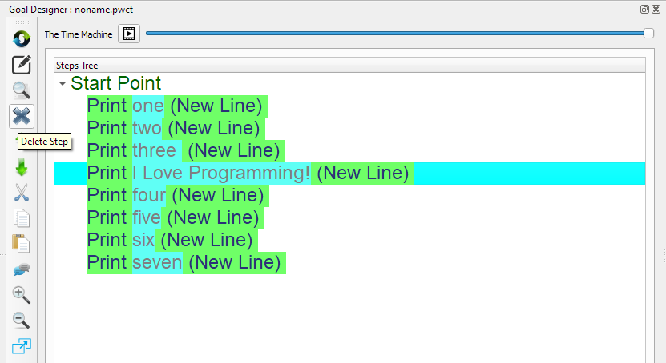
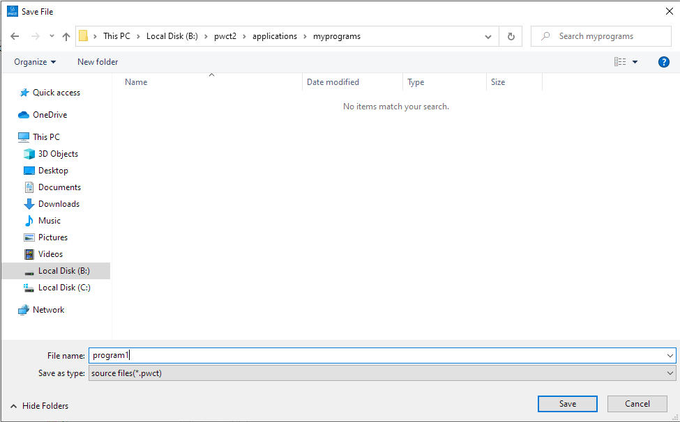

Getting Started¶
In this chapter we are going to learn how to create our first application using PWCT
The Main Window¶
When we run PWCT, The Main Window contains the next dockable windows
Components Browser
Project Files
Form Designer
Output Window
Goal Designer
Components Browser¶
1 - Using the Components Browser, We can select a component to use
2 - Each component could provide an Interaction Page (Data-Entry Window)
3 - The Component lead the steps generation process in the Steps Tree (Inside the Goal Designer)
4 - The Component also generate the Textual source code in the background

5 - We can search in the Components Tree by typing the Component name or some letters in the name
For example, by typing the letter ‘p’ we can find the (Print Text) component
6 - To use the component after selecting it, Press (Enter) or (Double Click) using the Mouse
Project Files¶
Using the Project Files window, We can open visual source files quickly!

For example, We can open the file (tetris.pwct) which contains the Tetris game!
To run this game we can click on the Run button in the Main Toolbar (Ctrl+F5)

Form Designer¶
Using the Form Designer, We can design the application forms (User Interface)

For example, The User Interface of the Desktop Screen Shot application is designed using the Form Designer

Output Window¶
Using the Output Window, We can see the programs output!

Also we can provide the required input for console applications
For example, The next console application ask about the User Name!
We can type the name in the Textbox then press (Enter) or click on the (Send) button
Goal Designer¶

1 - Contains the Steps Tree that represent the logic behind our program
2 - Contains buttons that we can use to control the steps tree
3 - Contains the Time Machine
3.1 - Support running the program in the past
3.2 - Support playing the program as movie
Hello World Program¶
In this section we will learn how to create the (Hello, World!) program
Section Contents:
How to create the program using the Mouse
The Steps Summary
How to create the program using the Keyboard Shortcuts
Hello World Program (Using the Mouse)¶
From the Components Browser, Select the (Print Text) component
Then double click using the Mouse

After selecting the component, an interaction page will appears in the Goal Designer
Using this Interaction Page we can determine the text that will be printed on the screen
Type: Hello, World!
Then click the (Ok) button

This will generate the next step in the Goal Designer Window

Now we can run the program and see the program output
To run the program click on the (Run) button from the Main Toolbar

The next output will appears in the Output Window

Hello World Program (Steps Summary)¶
Select (Print Text) from the Components Browser
Enter (Hello, World!) then click (Ok) in the Interaction Page
Click (Run) from the Main Toolbar

Hello World Program (Using the Keyboard)¶
Inside the Goal Designer window press the letter ‘p’
The Search Textbox will be active, and the pressed letter will be written there
This will select the (Print Text) component
Press (Enter) to use the (Print Text) Component
Write (Hello, World!) then press CTRL+W (Similar to clicking on the OK button)
Press CTRL+F5 to run the program!
Tip
Pressing any letter inside the Goal Designer will move us to the Components Browser
Using the Goal Designer¶
In this section we will learn about using the Goal Designer
Section contents:
Copy & Paste the Steps
Modify the Steps
Using the Time Machine
Moving Steps Up & Down
Cut & Paste Steps
Inserting Steps
Comment/Uncomment Steps
Deleting Steps
Search and Replace
Using the Again Button
Copy & Paste the Steps¶
Select the step (Print Hello, World!) then click on the (Copy) button or press Ctrl+C
Now select the Start Point then click on the (Paste) button or press Ctrl+V

We can do the paste operation many times
Now when we run the program using Ctrl+F5 we can see the (Hello, World!) message printed seven times
Sure it’s not the right way to program something like this because it’s better to use a For-Loop
Modify the Steps¶
To modify a step, We can click on the (Modify) button or press Ctrl+E or double click on the step.
Select the first step, Then press Ctrl+E
Change the Text from (Hello, World!) to (one) then press Ctrl+W
Change all of the steps to print the numbers from (one) to (seven)
Then run the program using Ctrl+F5
Using the Time Machine¶
Inside the Goal Designer and using The Time Machine Slider we can move backward along the Time Dimension
For example, At this point in the past we have three steps only
We can run the program in the past using Ctrl+F5
This will print (one two three) - Each word in separate line
We can move forward and go to the present where we have all of the seven steps
Also we can click on the (Play) button to play the program as movie
This will create the program step-by-step to learn how to generate each step
This will display the selected component in the Components Browser and the Interaction Pages too!
For example, at this point in the past, Nothing exist!
While at this point we have two steps
Moving Steps Up & Down¶
We can change the order of the steps inside the Steps Tree using the Up & Down buttons
For Example, Select the step (Print seven) then click on the Up button or press Ctrl+U
Now we see the (Print seven) comes before (Print six)
Click on the Up button many times until the (Print seven) step becomes the first step
Then run the program using Ctrl+F5
Cut & Paste Steps¶
Select the (Print seven) step then click on the (Cut) button or press Ctrl+X
Select the (Start Point) then click on the (Paste) button or press Ctrl+V
This will paste the (Print seven) step after the (Print six) step
Run the program using Ctrl+F5
Inserting Steps¶
To insert a new step after the (Print three) step
At first select the (Print three) step then start a new interaction process
Start using the (Print Text) component
The new generated step will be added directly after the (Print three) step
Comment/Uncomment Steps¶
To comment a step, Select it first then click on the (Comment/Uncomment) button or press Ctrl+I
The commented step will not be executed when we run the program
To enable the step again (Uncomment), select it then click on the (Comment/Uncomment) button
Deleting Steps¶
To delete a step, select it then click on the (Delete) button
Click (Yes) or press (Enter) to delete the step
Search and Replace¶
To find a step, click the (Search) button or press Ctrl+F
For example, In the Search window type the letter “o” then click (Search) or press Enter
Once we select a step from the Results Listbox, this step will be the active step in the Steps Tree
We can replace the text with another text

For example replace (seven) with (** seven **) then click the (Replace) button
Then run the program using Ctrl+F5 to see the change in the output
Using the Again Button¶
We can use the same component many times using the (Again) button
For example, when we use the (Print Text) component, and after writing the text (eight) click (Again) instead of (Ok)
This will generate the step (Print eight) in the steps tree
Also we can use the interaction page to write another text like (nine)
Click (again)
Now we have the step (Print nine) in the Steps Tree
This time we will write (ten) then click (Ok) or press Ctrl+W
Run the program using Ctrl+F5 to see the output
Visual Source Files¶
In this section we will learn about the Visual Source Files (*.pwct)
Section contents:
Saving the file
Opening the file
Starting new file
Saving the file¶
To save the file, Click on the (Save) button from the Main Toolbar or press Ctrl+S
Select the folder, or create a new folder
For example : pwct2/applications/myprograms
Then type the file name : program1
The saved file will be progam1.pwct
After saving the file, the file name will be used as the window title in the Goal Designer
Opening the file¶
To open a file, click on the (Open) button from the Main Toolbar
Select the file, for example: program1.pwct
Also we can open the files using the Project Files window
Just go to the folder and select the file
Starting new file¶
To start a new file, From the (File) menu, select (New) or press Ctrl+Alt+N
Another way is to click on the (New) button from the Main toolbar
The new file name will be (noname.pwct)
To change the file name click (Save)
Save As¶
Using (Save As) we can save the file using another name